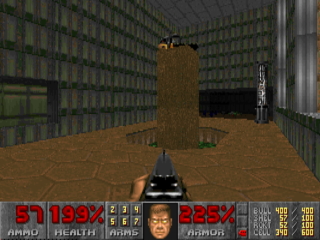
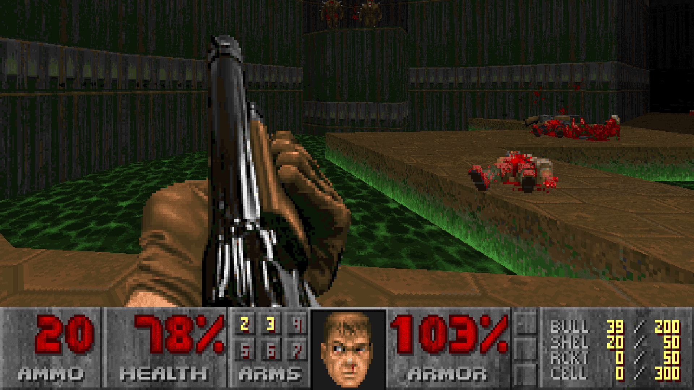
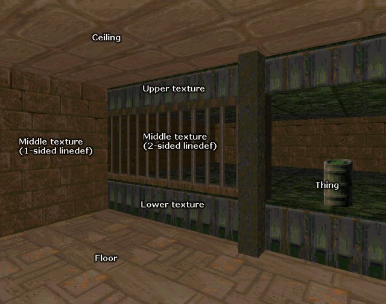

The DOOM sereis is credited with making one of the biggest steps twoards 3D gaming. Unlike the Wolfinstein engine, DOOM had the capability of rendering multiple floors and lighting effects. This allowed for more fun and engaging maps.
The game was made by ID software, makers of the Wolfinstein series. As a result, the DOOM engine was pretty much the Wolfinstein engine with new levels of abstraction added to it. Like Wolfinstein 3D, levels are stored as a 2D maps except this time no tiles are used. Certian floors on the map could now be given a hight value.
Walls in the game are draw vertically and the floor and ceilings are drawn as two flat planes across the screen. The horizon line is basically the players location and as the player assends and decends floors the floor and ceiling shift to create the illusion of 3D space. Textures are applied to certian areas of the walls to create unique effects like iron bars.
Doom also splits parts of the map into sectors. The drawn sector is the sector the player is located in. This helped limit the nessesary rendering, keeping the preformace up